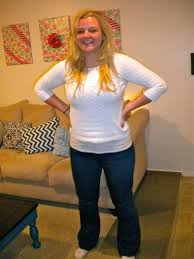

FHE roulette
Project Purpose
I currently serve as a Family Home Evening coordinator for my YSA ward here at BYUI. This means that I oversee all the Group leaders (Moms and Dads) to ensure that they are having FHE and that their activities are meaningful. The greatest difficulty is having the college students actually take time for the spiritual side of Family Home Evening. Another difficulty is when the group leaders don’t plan an activity due to indecision or lack of ideas.
The purpose of this website will be to quickly produce a complete “BYUI” family home evening activity at the click of a button. This activity would include a spiritual thought, an activity, and a dessert or snack that could be provided with ease.
• A spiritual thought of 5-10 minutes would replace a full lesson to ensure that college students actually incorporate them in their FHEs (the majority of FHEs are just an activity).
• The activity will be easy, fun, and local to Rexburg, ID. There will be around 30 activities to choose from to ensure boredom isn’t an option.
• The dessert/snack could be assigned to a different apartment weekly and would be easy to make and/or cheap to purchase.
In the end, this site’s end goal is to help FHE families to have spiritual/fun/memorable activities. It’s not to replace the calling of FHE mom and dad, but help them when they can’t think of anything to do.
The Audience
The Audience would be anyone who participates in a FHE group here at BYUI. I imagine stressed, tired students who are indecisive about what they should plan. They have been unable to completely plan an FHE activity because of all their homework. They use this site to get an idea of some activities that would be easy and enjoyable.
Persona
Victoria Jansen: I'm a BYUI student who works 20 hours a week and I've recieved the calling to be an FHE group leader. The people who are in my fhe group rarely help me think of ideas for Family Home Eavening. The FHE Dad doesn't really help either! I had to study for a test this weekend and didn't think of an FHE idea. I'm going to use FHE roulette to break the mental ice block.

Web Pages
• A home page with a header, nav (which would contain links to the different web pages), a footer, and a main content area where the Roulette feature comes into play. By clicking on the roulette wheel they would trigger a javascript function that would spit our into three separate divs 1 randomly selected spiritual thought, activity, and snack/dessert.(WILL USE JQUERY AND VANILLA JS)
• A page with a list of links to all the preformed spiritual thoughts/ talks/ videos.(WILL USE JSON to populate the list of spiritual thoughts)
• A page with a list of links to all the activities. (WILL USE JSON to populate the list of activites)
• A page with a list of links to all the snack/dessert ideas.(WILL USE JSON to populate the list of snacks)
• A page devoted to an explanation of who I am, why I made the page. This will be a HTML 5 video! (WILL INCLUDE MY HTML 5 VIDEO)
*each page would contain the same header and footer to allow easy navigation between the pages.
Wireframe Sketches
Usability Concepts
This site will load extremely fast even on slower connections.
There will be enough contrast between the background and the text.
The Font size will be easy to read and spaced correctly.
All the images will have appropriate alt tags.
There will be a tagline – “When you can’t decide what to do”
The contact information will be in the about me tab.
The Home page will easy to interpret.
Nav will be easily seen.
The labels will be descriptive, but concise.
The lilnks will be consistent and easy to identify.
The major headings will be clear and descriptive.
Colors will be consistent blue/white and grey (BYUI colors)
The Main copy will be short, and concise.